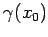
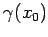

Inhalt Index DeskTop Bronstein

 Dynamische Systeme und Chaos Gewöhnliche Differentialgleichungen und Abbildungen Zeitdiskrete dynamische Systeme Ruhelagen, periodische Orbits und Grenzmengen
Dynamische Systeme und Chaos Gewöhnliche Differentialgleichungen und Abbildungen Zeitdiskrete dynamische Systeme Ruhelagen, periodische Orbits und Grenzmengen


Sei ein T-periodischer Orbit  von (17.3). Dann heißt  hyperbolisch, wenn x0 eine hyperbolische Ruhelage der Abbildung ist.
von (17.3). Dann heißt  hyperbolisch, wenn x0 eine hyperbolische Ruhelage der Abbildung ist.
Die Matrix heißt Monodromie-Matrix; die Eigenwerte  von sind die Multiplikatoren von
von sind die Multiplikatoren von  .
.
Sind alle Multiplikatoren  von vom Betrag kleiner 1, so ist der periodische Orbit asymptotisch stabil.
von vom Betrag kleiner 1, so ist der periodische Orbit asymptotisch stabil.